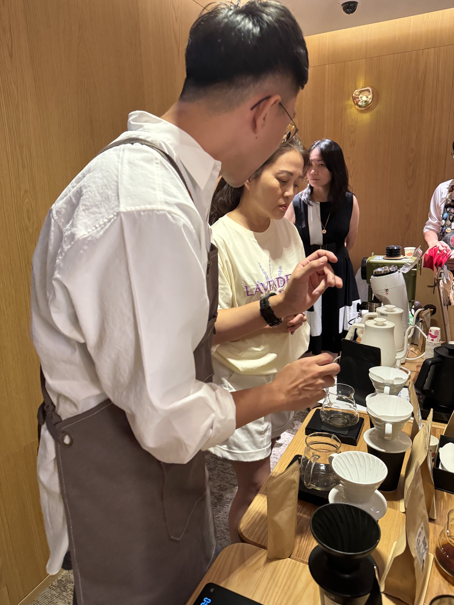

FORWARD COFFEE / COFFEE WORKSHOP
好好手沖｜新手手沖課
從第一杯開始，學會自己的手沖。
不用先懂咖啡。讓阿勳與露露陪你，
把喜歡的味道，一步一步沖出來。
買自己喜歡的豆，煮自己的風格
01 / LEARN TO BREW
一堂課，
讓每一杯更有把握。
從認識器材到獨立沖煮，把方法學會，把味道留給自己決定。

A LITTLE GUIDANCE. A BETTER CUP.
每個新手的問題，
都有人一起解開。
不只記住一組配方，而是理解每一步為什麼。親手練習注水、品嚐差異，找到回家後也能繼續練的方法。
- 課程時間
- 四小時
- 課程費用
- NT$1,800／人
- 上課地區
- 林口／樹林／土城
- 適合對象
- 零經驗可參加
你會帶走的三件事
- 01
沖出第一杯
從器材、研磨到注水，跟著 SOP 親手練習。
- 02
知道怎麼調整
練習 4:6 沖法，理解水溫、研磨、豆量與時間。
- 03
回家也能繼續
帶走 SOP 學習卡與筆記講義，讓練習延續到日常。
03 / DELIVERY & SUPPORT
買豆之前，
把每個細節說清楚。
配送、付款與售後集中在這裡。有問題，也可以直接找我們。